In this lesson, you’ll implement a rating control for the FoodTracker app. When you’re finished, your app will look something like this:
このレッスンでは、あなたは格付けコントロールをFoodTrackerアプリに実装します。あなたが作業し終わった時、あなたのアプリはこのようなものに見えるでしょう：
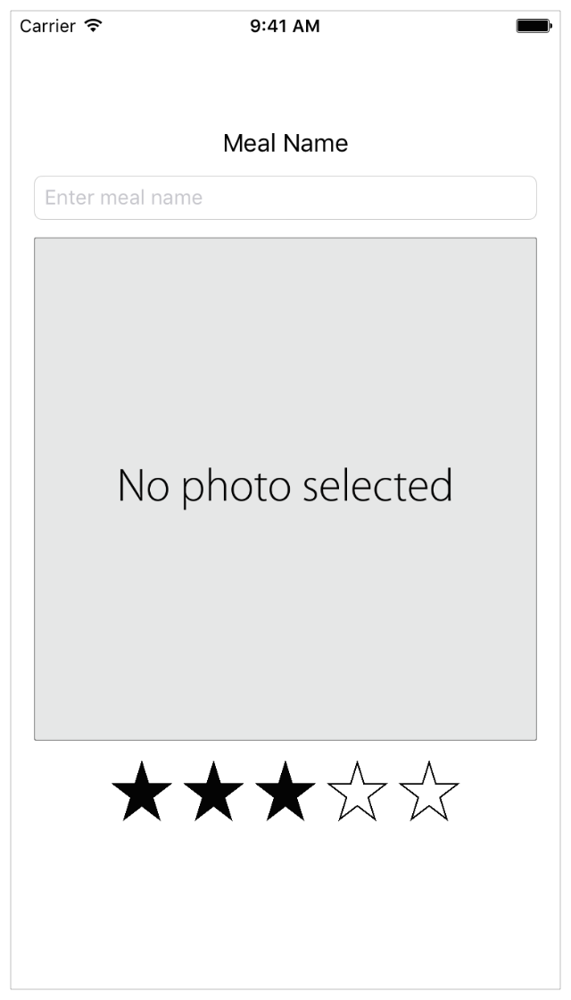
Learning Objectives
学習する目標
At the end of the lesson, you’ll be able to:
このレッスンの終わりに、あなたが出来るようになるのは：
Create and associate custom source code files with elements in a storyboard
カスタムソースコードを作成してストーリーボードの要素と結びつける
Define a custom class
カスタムクラスを定義する
Implement an initializer on a custom class
カスタムクラス上でイニシャライザを実装する
Use UIView as a container
UIViewをコンテナ（容れ物）として使う
Understand how to display views programmatically
どのようにビューを表示するかプログラム的に理解する
Create a Custom View
カスタムビューの作成
To be able to rate a meal, users need a control that lets them select the number of stars they want to assign to the meal. There are many ways to implement this, but you’ll focus on one that involves creating a custom view that you define in code and use in your storyboard.
食事に格付けできるようにするために、ユーザに必要なのはあるコントロールです、それは彼らがその食事に付けたい星の数を選ばせます。これを実装するためには多くのやり方があります、しかしあなたが焦点を合わせるものは、カスタムビューの作成を伴います、それはあなたがコードにおいて定義してあなたのストーリーボートで使うものです。
Here’s the rating control you’re implementing:
ここにあなたが実装する格付けコントロールがあります：
The rating control will let users choose 0, 1, 2, 3, 4, or 5 stars for a meal. When a user taps a star, all stars leading up to and including that star (from the left) are filled in. A filled-in star counts as a rating; an empty star doesn’t.
格付けコントロールは、ユーザに０、１、２、３、４、または５個の星をある食事に対して選ばせます。ユーザがある星をタップする時、その星を含めてそれまでの前にあるのすべての星が塗りつぶされます。塗りつぶされた星は格付けとして数えられます；空の星はそうではありません。
To begin designing the UI, interaction, and behavior of this control, start by creating a custom view (UIView) subclass.
設計をUI、相互作用、そしてこのコントロールの挙動に対して始めるには、あるあつらえのビュー（UIView）のサブクラスを作成することで始めます。
To create a subclass of UIView
UIViewのサブクラスを作成するには
Choose File > New > File (or press Command-N).
File > New > Fileを選んでください（またはコマンド-Nを押します）。
On the left of the dialog that appears, select Source under iOS.
現れたダイアログの左で、SourceをiOSの下で選んでください。
Select Cocoa Touch Class, and click Next.
Cocoa Touch Classを選んで、Nextをクリックしてください。
In the Class field, type RatingControl.
Class欄において、RatingControlをタイプします。
In the “Subclass of” field, select UIView.
「Subclass of」欄において、UIViewを選択します。
Make sure the Language option is set to Swift.
LanguageオプションがSwiftに設定されていることを確かめてください。
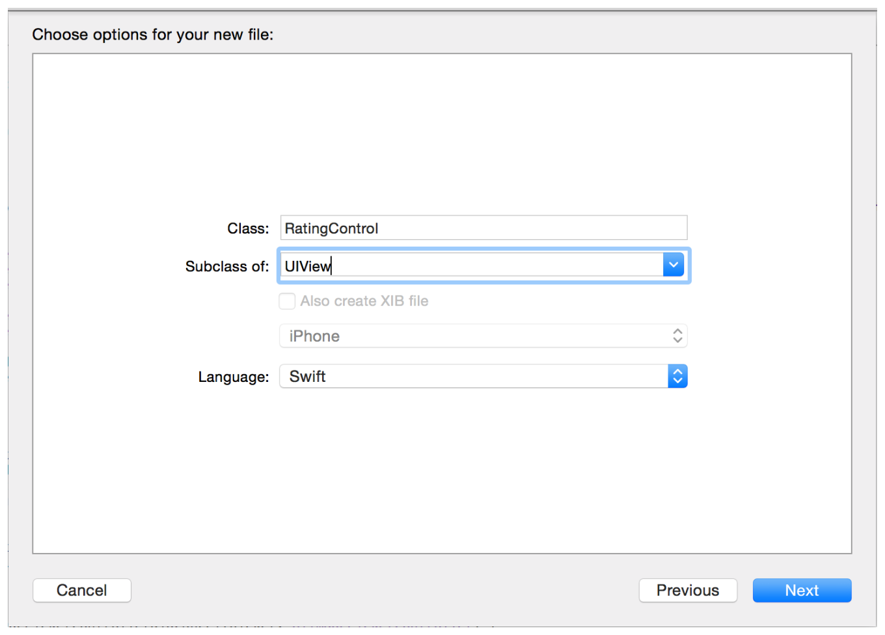
Click Next.
Nextをクリックしてください。
The save location defaults to your project directory.
保存場所は、初期状態であなたのプロジェクトディレクトリです。
The Group option defaults to your app name, FoodTracker.
Groupオプションは、初期状態であなたのアプリ名、FoodTrackerです。
In the Targets section, your app is selected and the tests for your app are unselected.
Targets区画において、あなたのアプリが選択されて、あなたのアプリのためのテストは選択されません。
Leave these defaults as they are, and click Create.
これらの初期値はそれらのままにしておきます、そしてCreateをクリックします。
Xcode creates a file that defines the RatingControl class: RatingControl.swift. RatingControl is a custom view subclass of UIView.
Xcodeは、RatingControlクラスを定義するファイル：RatingControl.swiftを作成します。RatingControlは、UIViewのカスタムのビュー・サブクラスです。
In RatingControl.swift, delete the comments that come with the template implementation so you can start working with a blank slate.
RatingControl.swiftにおいて、ひな形実装に付いてくるコメントを削除してください、それであなたは白紙の状態で作業を始めることができます。
The implementation should look like this:
実装はこのように見えるはずです：
importUIKit
classRatingControl: UIView {
}
You typically create a view in one of two ways: by initializing the view with a frame so that you can manually add the view to your UI, or by allowing the view to be loaded by the storyboard. There’s a corresponding initializer for each approach: init(frame:) for the frame and init?(coder:) for the storyboard. Recall that an initializer is a method that prepares an instance of a class for use, which involves setting an initial value for each property and performing any other setup.
あなたは概して、ビューを２つのやり方のうちの１つで作成します：ビューをある配置枠（frame フレーム）を使って初期化（イニシャライズ）して、それであなたが手動でビューをあなたのUIに追加することによって、またはビューをストーリーボードにロードされるようにすることによって。それぞれの取り組み方に合ったイニシャライザがあります：配置枠用のinit(frame:)とストーリーボード用のinit?(coder:)。思い出してください、イニシャライザ（初期化子）はひとつのメソッドです、それはクラスのインスタンスを使用する段取りを整えます、それには各プロパティに対する初期値の設定となんらかの他の設定の実行を伴います。
Because you’ll be using this view in your storyboard, start by overriding its superclass’s implementation of the init?(coder:) initializer.
あなたはこのビューをあなたのストーリーボードの中で使うことになるので、それのスーパークラスのもつinit?(coder:)イニシャライザ実装をオーバーライドすることによって始めます。
To override the initializer
イニシャライザをオーバーライドするには
In RatingControl.swift, under the class line, add this comment.
RatingControl.swiftにおいて、class行の下で、このコメントを加えてください。
// MARK: Initialization
Below the comment, start typing init.
このコメントの下で、initの入力を始めます。
The code completion overlay shows up.
コード補完重ね表示が現れてきます。
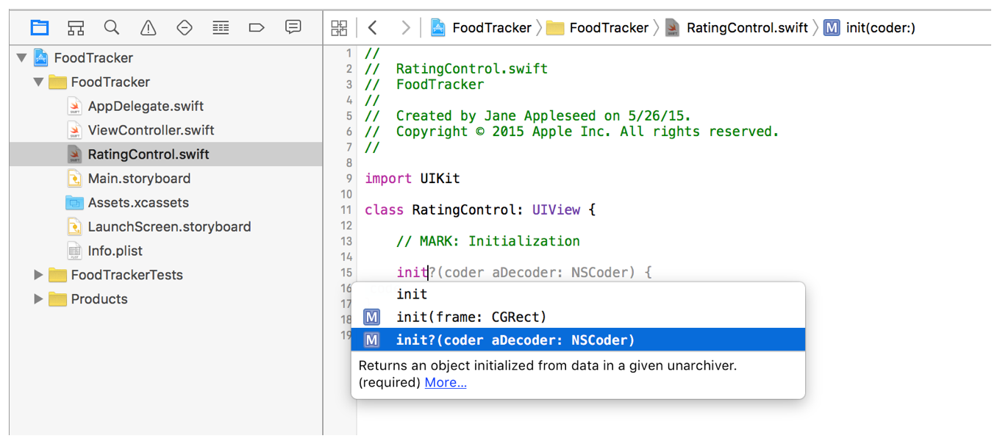
Select the third method in the list to get the init?(coder:) initializer, and press Return.
３つ目のメソッドをリストで選択してinit?(coder:)イニシャライザを入手するようにして、リターンキーを押してください。
init?(coderaDecoder: NSCoder) {
}
Xcode inserts the initializer skeleton for you.
Xcodeはそのイニシャライザの骨組みをあなたの代わりに挿入します。
Click the error fix-it to include the required keyword.
エラーの修正（Fix-it）をクリックして、requiredキーワードを含めてください。
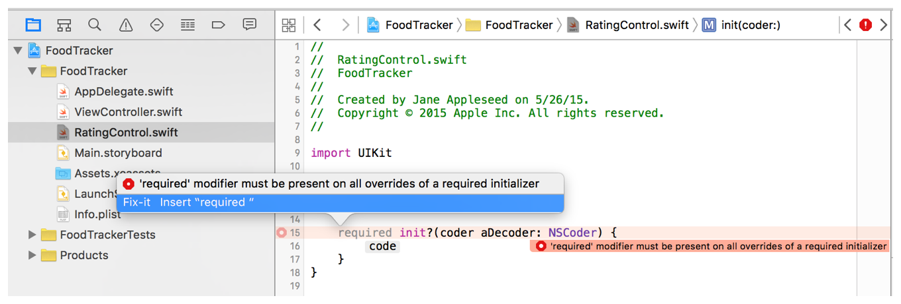
requiredinit?(coderaDecoder: NSCoder) {
}
Every UIView subclass that implements an initializer must include an implementation of init?(coder:). The Swift compiler knows this, and offers a fix-it to make this change in your code. Fix-its are provided by the compiler as potential solutions to errors in your code.
どのUIViewサブクラスでもイニシャライザを実装するものは、init?(coder:)の実装を含まなければなりません。Swiftコンパイラはこれを知っています、そして修正を提案してこの変更をあなたのコードにしようとします。これらの修正は、あなたのコードのエラーに対する見込みある解決策としてコンパイラによって提供されます。
Add this line to call the superclass’s initializer.
この行を加えてスーパークラスのイニシャライザを呼び出してください。
super.init(coder: aDecoder)
Your init?(coder:) initializer should look like this:
あなたのinit?(coder:)イニシャライザはこのように見えるはずです：
requiredinit?(coderaDecoder: NSCoder) {
super.init(coder: aDecoder)
}
Display the Custom View
カスタムビューの表示
To display your custom view, you need to add a view to your UI and establish a connection between that view and the code you just wrote.
あなたのカスタムビューを画面表示するために、あなたが必要とするのは、ビューをあなたのUIに加えて、そのビューとあなたがたった今記述したコードとの間の接続を確立することです。
To display the view
ビューを表示するには
Open your storyboard.
あなたのストーリーボードを開いてください。
In your storyboard, use the Object library to find a View object and drag one into your storyboard scene so that it’s in the stack view below the image view.
あなたのストーリーボードにおいて、オブジェクトライブラリを使ってViewオブジェクトを見つけ、ひとつあなたのストーリーボードシーンにドラッグします、そうしてスタックビューの中のイメージビューの下になるようにします。［イメージビューは前のレッスンで食事写真表示用に加えたものです］
With the view selected, open the Size inspector in the utility area.
そのビューが選択された状態で、Sizeインスペクタをユーティリティ区画で開きます。
Recall that Size inspector appears when you select the fifth button from the left in the inspector selector bar. It lets you edit the size and position of an object in your storyboard.
思い出してください、サイズインスペクタが現れるのはあなたが左から5番目のボタンをインスペクタ選択バーで選んだ時です。それは、あなたにあなたのストーリーボードの中のオブジェクトの大きさと位置を編集させます。
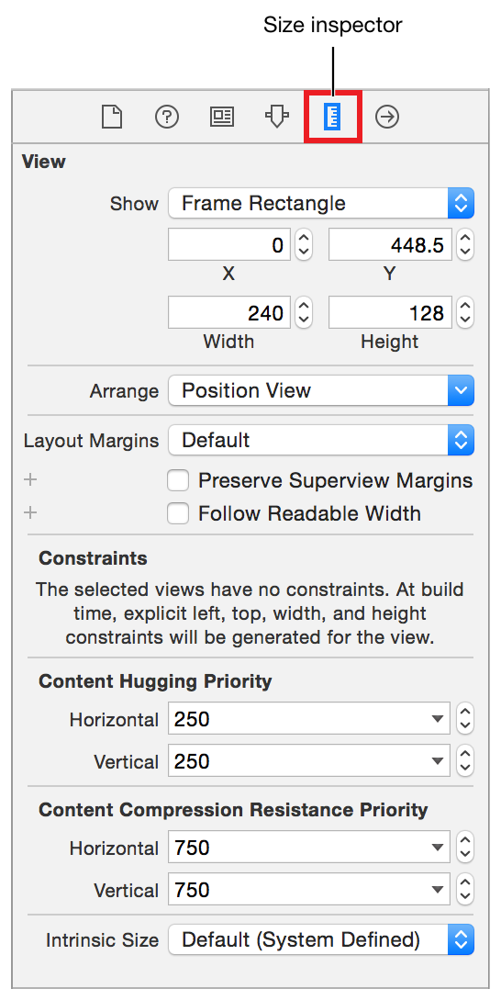
In the pop-up menu labeled Intrinsic Size, choose Placeholder. (This field is at the bottom of the Size inspector, so you’ll need to scroll down to it.)
Intrinsic Size（固有サイズ）とラベルをつけられたポップアップメニューにおいて、Placeholder（プレースホルダ）を選びます。（この欄は、Sizeインスペクタの下の方にあります、それであなたはそれまで下にスクロールする必要があるでしょう）
Type 44 into the Height field and 240 into the Width field located below Intrinsic Size. Press Return.
Intrinsic Sizeの下にある、Height（高さ）欄に44をそしてWidth（幅）欄に240をタイプしてください。リターンキーを押します。
Your UI should look something like this:
あなたのUIはこのようなものに見えるはずです：
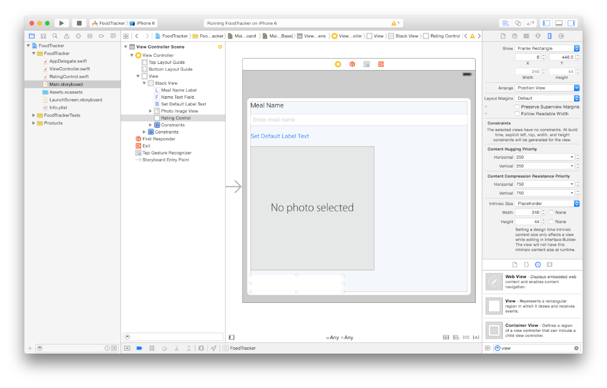
With the view selected, open the Identity inspector .
ビューが選択された状態で、同一性インスペクタを開いてください。
Recall that the Identity inspector lets you edit properties of an object in your storyboard related to that object’s identity, such as what class the object belongs to.
思い出してください、同一性インスペクタは、あなたにあなたのストーリーボードのあるオブジェクトのプロパティをそのオブジェクトの同一性に関して、例えばどのクラスにそのオブジェクトが所属するかなどを、編集させます。
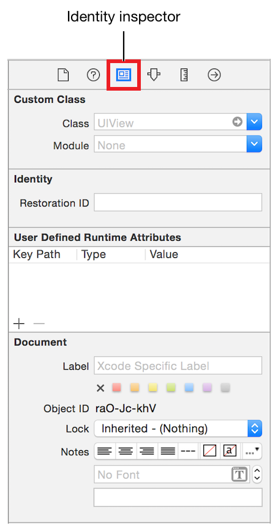
In the Identity inspector, find the field labeled Class and select RatingControl.
同一性インスペクタにおいて、Classとラベルをつけられる欄を探してRatingControlを選択してください。
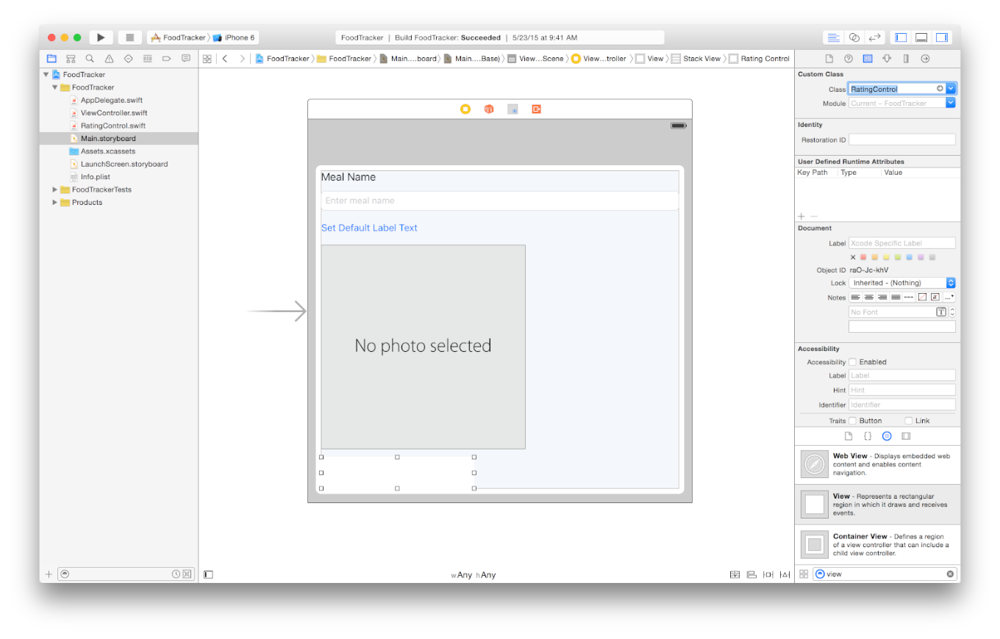
Add Buttons to the View
ボタンをビューに加える
At this point, you’ve got the basics of a custom UIView subclass, called RatingControl. The next thing you’ll need to do is add buttons to your view to allow the user to select a rating. Start with something simple, like getting a single red button to show up in your view.
この時点で、あなたは基本的なカスタムUIViewサブクラス、RatingControlと呼ばれるものを手に入れています。次にあなたがする必要があることは、ボタンをあなたのビューに加えてユーザが格付けを選べるようにすることです。始めに簡単なことをします、例えばひとつだけ赤いボタンをあなたのビューに表示させることのような。
To create a button in your view
ボタンをあなたのビューの中に作成するには
In the init?(coder:) initializer, add the following lines of code to create a red button:
init?(coder:)イニシャライザにおいて、以下のコード行を加えることで赤いボタンを作成します：
You’re using redColor() so it’s easy to see where the view is. If you’d like, use one of the other predefined UIColor values instead, like blueColor() or greenColor().
あなたはredColor()を使っています、それでビューのどこにあるかがわかりやすくなります。あなたが好むならば、別のあらかじめ定義されたUIColor値を代わりに使ってください、例えばblueColor()またはgreenColor()のような。
Below the last line, add this code:
最後の行の下に、このコードを加えてください：
addSubview(button)
The addSubview() method adds the button you created to the RatingControl view.
このaddSubview()メソッドは、あなたが作成したボタンをRatingControlビューに加えます。
Your init?(coder:) initializer should look like this:
あなたのinit?(coder:)イニシャライザはこのように見えるはずです：
To tell the stack view how to lay out your button, you also need to provide an intrinsic content size for it. To do this, override the intrinsicContentSize method to match the size you specified in Interface Builder like this:
スタックビューにあなたのボタンをレイアウトする方法を教えるために、あなたはまた、固有のコンテンツサイズをそれに提供する必要があります。これを行うために、intrinsicContentSizeメソッドをオーバーライドして、あなたがインターフェイスビルダーにおいて指定したサイズに合うようにしてください、このように：
overridefuncintrinsicContentSize() -> CGSize {
returnCGSize(width: 240, height: 44)
}
Checkpoint: Run your app. You should be able to see a view with a small red square inside of it. The red square is the button you added in the initializer.
確認点：あなたのアプリを実行します。あなたは、ビューと一緒に小さな赤い四角をそれの内部に見ることができるはずです。この赤い四角は、あなたがイニシャライザに加えたボタンです。
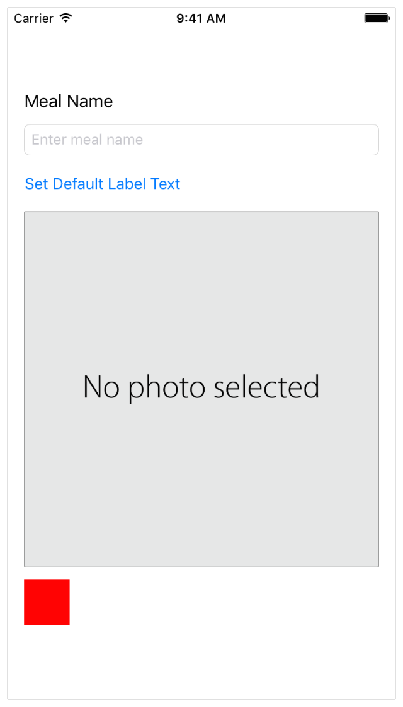
You’ll need this button and eventually the other buttons in this view to perform an action when they’re tapped. That action is changing a meal’s rating.
あなたが必要とするのは、このボタンとゆくゆくは他のボタンがこのビューにおいてあるアクションをそれらがタップされた時に行うようにすることです。そのアクションはある食事の格付けを変更します。
To add an action to the button
アクションをボタンに加えるには
In RatingControl.swift, before the last curly brace (}), add the following:
RatingControl.swiftにおいて、最後の波括弧（}）の前で、以下を加えてください：
// MARK: Button Action
Under the comment, add the following:
このコメントの下で、以下を加えてください：
funcratingButtonTapped(button: UIButton) {
print("Button pressed 👍")
}
For now, use the print() function to check that the ratingButtonTapped(_:) action is linked to the button as expected. This function prints a message to the standard output, which in this case is the Xcode debug console. The console is a useful debugging mechanism that appears at the bottom of the editor area.
今のところ、このprint()関数を使うことで、ratingButtonTapped(_:)アクションがこのボタンと期待するように結合されることを確認します。この関数は、あるメッセージを標準出力に印字します、それはこの場合ではXcodeデバッグコンソールになります。このコーソールは、有用なデバッグの仕組みです、それはエディタ区画の下に現れます。
You’ll replace this debugging implementation with a real implementation in a little while.
あなたは、このデバック実装を実際の実装としばらくして置き換えます。
Find the init?(coder:) initializer:
init?(coder:)イニシャライザを見つけてください：
You’re familiar with the target-action pattern because you’ve used it to link elements in your storyboard to action methods in your code. Above, you’re doing the same thing, except you’re creating the connection in code. You’re attaching the ratingButtonTapped(_:) action method to the button object, which will be triggered whenever the .TouchDown event occurs. This event signifies that the user has pressed on a button. You set the target to self, which in this case is the RatingControl class, because that’s where the action is defined.
あなたはターゲット-アクション・パターンをよく知っています、なぜならあなたはそれを使ってあなたのストーリーボードの中の要素とあなたのコードの中のアクションメソッドを結びつけているからです。上で、あなたはは同じことをしています、違うのはあなたがコードにおいて接続を作成していることです。あなたは、ratingButtonTapped(_:)アクションをbuttonオブジェクトに取り付けています、それは.TouchDownイベントが起こるたびに作動させられます。このイベントが意味するのは、ユーザがあるボタン上を押したということです。あなたはターゲットをselfに設定します、それはこの場合にはRatingControlクラスです、なぜならそれはアクションが定義されるところだからです。
The #selector expression returns the Selector value for the provided method. A selector is an opaque value that identifies the method. Older APIs used selectors to dynamically invoke methods at runtime. While newer APIs have largely replaced selectors with blocks, many older methods—like performSelector(_:) and addTarget(_:action:forControlEvents:)—still take selectors as arguments. In this example, the #selector(RatingControl.ratingButtonTapped(_:)) expression returns the selector for your ratingButtonTapped(_:) action method. This lets the system call your action method when the button is tapped.
#selector式は、与えられたメソッドに対するSelector値を返します。セレクタは、メソッドを識別する不透明な値です。古いAPIは、実行時に動的にメソッドを発動するためにセレクタを使いました。新しいAPIが大部分はセレクタをブロックで置き換える一方で、多くの古いメソッドは — performSelector(_:)およびaddTarget(_:action:forControlEvents:)などは — 依然としてセレクタを引数として取ります。この例において、#selector(RatingControl.ratingButtonTapped(_:))式はあなたのratingButtonTapped(_:)アクションメソッドに対するセレクタを返します。これは、システムにあなたのアクションメソッドをボタンがタップされる時に呼び出させます。
Note that because you’re not using Interface Builder, you don’t need to define your action method with the IBAction attribute; you just define the action like any other method.
注意することは、あなたがインターフェイスビルダーを使っていないことです、あなたがしなくていもいいのは、あなたのアクションメソッドをIBAction属性とともに定義することです；あなたは単にこのアクションをあらゆる 他のメソッドと同じように定義します。
Your init?(coder:) initializer should look like this:
あなたのinit?(coder:)イニシャライザはこのように見えるはずです：
Checkpoint: Run your app. When you click the red square, you should see the “Button pressed” message in the console.
確認点：あなたのアプリを実行します。あなたが赤い四角をクリックする時、あなたは「Button pressed」メッセージをコンソールにおいて見るはずです。
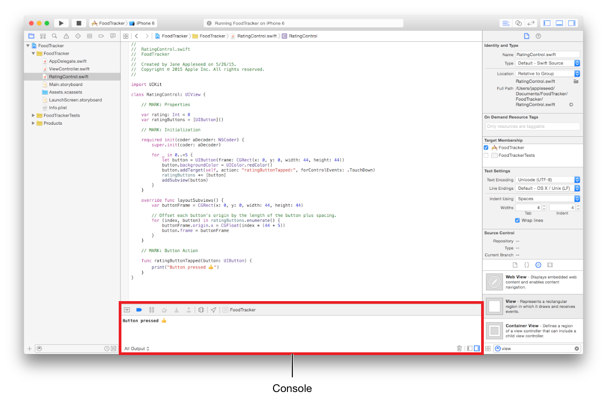
Now it’s time to think about what pieces of information the RatingControl class needs to have in order to represent a rating. You’ll need to keep track of a rating value—0, 1, 2, 3, 4, or 5—as well as the buttons that a user taps to set that rating. You can represent the rating value with an Int, and the buttons as an array of UIButton objects.
今やRatingControlクラスが格付けを表すために持つ必要がある情報の部品は何かについて考える時です。あなたが必要とするのは、格付けの値—0、1、2、3、4、または5—の、それだけでなくその格付けを設定するためにユーザがタップするボタンの、最新の状態を把握することです。あなたは、格付けの値をIntを使って、そしてボタンをUIButtonオブジェクトの配列として表すことができます。
To add rating properties
格付けプロパティを加えるには
In RatingControl.swift, find the class declaration line:
RatingControl.swiftにおいて、クラス定義行を見つけてください：
classRatingControl: UIView {
Below this line, add the following code:
この行の下に、以下のコードを加えてください：
// MARK: Properties
varrating = 0
varratingButtons = [UIButton]()
Right now, you have one button in the view, but you need five total. To create a total of five buttons, use a for-in loop. A for-in loop iterates over a sequence, such as ranges of numbers, to execute a set of code multiple times. Instead of creating one button, the loop will create five.
今のところ、あなたはひとつのボタンをこのビューに持ちます、しかしあなたが必要なのは全部で５つです。合計５つのボタンを作成するために、for-inループを使ってください。for-inループは、あるシーケンス（列、一続きのもの）のすべてに渡って繰り返して行きます、例えばある範囲の数などに対して、そうして一組にされたコードを複数回実行します。１つのボタンを作成するのではなく、このループは５つ作成します。
To create a total of five buttons
合計５つのボタンを作成するには
In RatingControl.swift, find the init?(coder:) initializer:
RatingControl.swiftにおいて、init?(coder:)イニシャライザを見つけてください：
You can make sure the lines in the for-in loop are indented properly by selecting all of them and pressing Control-I.
あなたは、for-inループの中の行が正しく字下げされることを、それらのすべてを選択してコントロール-Iを押すことによって確実に行えます。
The half-open range operator (..<) doesn’t include the upper number, so this range goes from 0 to 4 for a total of five loop iterations, drawing five buttons instead of just one. The underscore (_) represents a wildcard, which you can use when you don’t need to know which iteration of the loop is currently executing.
半開範囲演算子（..<）は、高い方の数を含みません、それでこの範囲は0から4になり合計５回ループを繰り返して、５つのボタンを描画します、１つではなく。アンダースコア（_）は、ワイルドカード（万能札）を表します、それはループのどの繰り返しが現在実行されているかをあなたが知る必要がない時に使うことができるものです。
Above the addSubview(button) line, add this:
addSubview(button)行の上で、これを加えてください：
ratingButtons += [button]
As you create each button, you add it to the ratingButtons array to keep track of it.
あなたが各ボタンを作成するとき、あなたはそれをratingButtons配列に加えてそれの最新の状態を把握するようにします。
Your init?(coder:) initializer should look like this:
あなたのinit?(coder:)イニシャライザはこのように見えるはずです：
Checkpoint: Run your app. You’ll notice it looks like there’s only one button. That’s because the for-in loop just stacked the buttons on top of each other. You’ll need to adjust where the buttons lay out in the view.
確認点：あなたのアプリを実行します。あなたはそれがただひとつのボタンだけがあるように見えることに気づくでしょう。その理由はfor-inループが単にボタンをそれぞれの上に積み重ねたからです。あなたが必要とするのは、ビューのどこにボタンがレイアウト（配置）されるか調節することです。
This type of layout code belongs in a method called layoutSubviews, a method defined on the UIView class. The layoutSubviews method gets called at the appropriate time by the system and gives UIView subclasses a chance to perform a precise layout of their subviews. You’ll need to override this method to place the buttons appropriately.
この種類のレイアウトコードが相応しいのは、ひとつのメソッドでありlayoutSubviewsと呼ばれて、UIViewクラス上で定義されるメソッドです。layoutSubviewsメソッドは、適切な時にシステムによって呼ばれます、そしてUIViewサブクラスにそれのサブビューの正確なレイアウトを実行する機会を与えます。あなたが必要とするのは、このメソッドをオーバーライドして、ちょうどよくボタンを設置するようにすることです。
To lay out the buttons
これらのボタンをレイアウトするには
In RatingControl.swift, under the init?(coder:) initializer in the // MARK: Initialization section, add the following method:
RatingControl.swiftにおいて、// MARK: Initialization区域のinit?(coder:)イニシャライザの下で以下のコードを加えてください：
overridefunclayoutSubviews() {
}
Remember that you can use code completion to insert this method skeleton quickly.
忘れないでください、あなたはコード補完を使ってこのメソッドの骨格をすばやく挿入できます。
In the method, add this code:
このメソッドにおいて、このコードを加えてください：
// Offset each button's origin by the length of the button plus spacing. （各ボタンの原点をボタンの長さに間隔を足したものでずらす）
for (index, button) inratingButtons.enumerate() {
buttonFrame.origin.x = CGFloat(index * (44 + 5))
button.frame = buttonFrame
}
This code creates a frame, and uses a for-in loop to iterate over all of the buttons to set their frames.
このコードは、配置枠を作成します、そしてfor-inループを使ってボタンのすべてに繰り返しそれらの配置枠を設定します。
The enumerate() method returns a collection that contains elements in the ratingButtons array paired with their indexes. This is a collection of tuples—groupings of values—and in this case, each tuple contains an index and a button. For each tuple in the collection, the for-in loop binds the values of the index and button in that tuple to local variables, index and button. You use the index variable to compute a new location for the button frame and set it on the button variable. The frame locations are set equal to a standard button size of 44 points and 5 points of padding, multiplied by index.
enumerate()メソッドはあるコレクションを返します、それはratingButtons配列の中の要素とそれらのインデックスを組みにして含みます。これはタプル—いくらかの値をまとめたもの—のコレクションです、そしてこの場合、各タプルはひとつのインデックスとひとつのボタンを含みます。このコレクションの中の各タプルに対して、for-inループはそのタプルの中のインデックスの値とボタンを、ローカル変数indexとbuttonにバインド（束縛、結びつけ）します。あなたは、index変数を使って新しい場所をボタン配置枠に対して計算して、それをbutton変数に設定します。配置枠の場所は、標準ボタンサイズの44ポイントと5ポイントの詰め物、それにindexを掛けたものと等しく設定されます。
Your layoutSubviews() method should look like this:
あなたのlayoutSubviews()メソッドはこのように見えるはずです：
// Offset each button's origin by the length of the button plus spacing. （各ボタンの原点をボタンの長さに間隔を足したものでずらす）
for (index, button) inratingButtons.enumerate() {
buttonFrame.origin.x = CGFloat(index * (44 + 5))
button.frame = buttonFrame
}
}
Checkpoint: Run your app. Now, the buttons should be side by side. Note, clicking any of the buttons at this point should still call ratingButtonTapped(_:) and log the message to the console.
確認点：あなたのアプリを実行します。今や、ボタンは横に並んでいるはずです。注意してください、いずれかのボタンをクリックすることはこの時点では依然としてratingButtonTapped(_:)を呼び出します、そしてメッセージをコンソールに記録します。
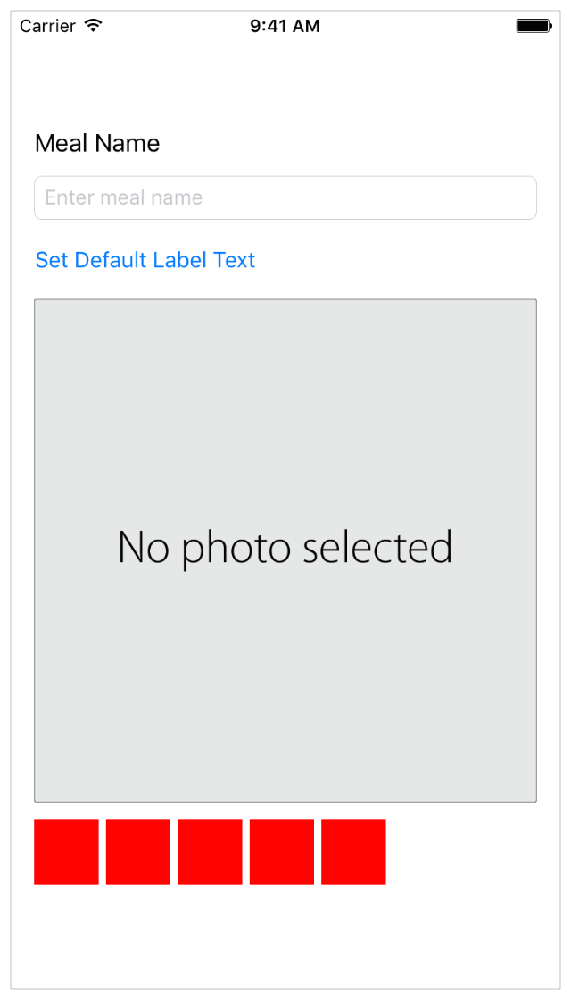
To collapse the console, use the Debug area toggle.
コンソールを折り畳むためには、Debug区画切り替えボタンを使ってください。
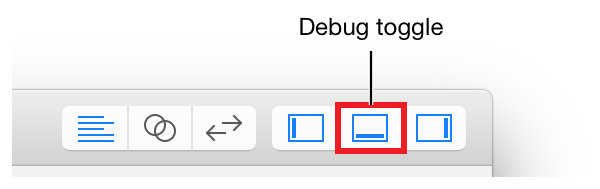
Add Properties for Spacing and Number of Stars
星の間隔と数に対するプロパティを加える
Notice that you’ve been using the value 5 in your code, both for the number of stars and for the amount of space between stars. It’s generally bad practice to keep hardcoded values scattered throughout your code. If you wanted to change the amount of space between stars, you’d have to change 5 wherever it was used to indicate space. The fact that the 5 values can mean two different things only further complicates the task.
注意することは、あなたが5値をあなたのコードに使っていることです、星の数に対してと星の間の空きに対しての両方に。一般的に悪い慣行とされるのは、変更されないように書いた値をあなたのコードのあちらこちらに点在させたままにすることです。あなたが星の間の空きを変えようと望むならば、あなたは5を、それが空きを指し示すために使われたどこにおいても変えなければならないでしょう。それら5の値が２つの異なる事柄を意味できるという事実は、作業をよりいっそう複雑にするだけです。
Instead, declare two variables, one for the amount of space between stars and one for the number of stars. Then, if you need to make a change, you’ll only need to change the value in one place.
代わりに、２つの変数を宣言しください、星の間の空きの量のために１つそして星の数のために１つ。それなら、あなたが変更する必要があるならば、あなたは単に一箇所で値を変えるのを必要とするだけです。
To add properties
プロパティを加えるには
In RatingControl.swift, find the // MARK: Properties section.
RatingControl.swiftにおいて、// MARK: Properties区域を見つけてください。
// MARK: Properties
varrating = 0
varratingButtons = [UIButton]()
You can jump to it quickly using the functions menu, which appears if you click the name of the file at the top of the editor area.
あなたは、素早く関数メニューを使ってジャンプできます、それはあなたがファイルの名前をエディタ区画の上部でクリックするならば現れます。
Below the existing properties, add the following code:
既存のプロパティの下で、以下のコードを加えてください：
letspacing = 5
You add this constant property to define the spacing between buttons.
あなたはこの定数プロパティを加えることで、ボタンの間の空きの取り方を定義します。
In layoutSubviews, replace the literal value you used for spacing with the spacing property:
layoutSubviewsにおいて、あなたが空きとして使ったリテラル値をspacingプロパティで置き換えてください：
Below the spacing property, add another property:
spacingプロパティの下で、もう１つのプロパティを加えてください：
letstarCount = 5
You can use this constant property to define the number of stars the control displays.
あなたは、この定数プロパティを使うことで、コントロールが表示する星の数を制御します。
In init?(coder:), replace the literal value you used for number of stars with the starCount property:
init?(coder:)において、あなたが星の数のために使ったリテラル値をstarCountプロパティと置き換えてください。
for_in0..<starCount {
Checkpoint: Run your app. Everything should work and look exactly as before.
確認点：あなたのアプリを実行します。すべてのものが正確に以前のように見え機能するはずです。
Declare a Constant for the Button Size
ボタンサイズ用に定数を宣言する
You have also been using the value 44 in your code to represent the button’s size. Again, you want to get rid of hardcoded values wherever possible. This time, make your buttons adjust to the size of their container view (the view you added to your storyboard) by retrieving the container view’s height. Use a local constant to store the container view’s height, so you only need to access it once inside each method.
あなたはまた、値44をあなたのコードにおいてボタンの大きさを表すために使ってしまっています。ふたたび、あなたは変更されないようにコードに書かれた値を可能なところはどこであろうと取り除くべきです。今度は、あなたのボタンの調節を、それらのコンテナビュー（あなたがあなたのストーリーボードに加えたビュー）のサイズに対して、そのコンテナビュー［ボタンの容れ物であるビュー］の高さを取り出すことによって行います。あるローカル定数を使ってコンテナビューの高さを格納してください、それであなたは各メソッドの内部で一度だけそれにアクセスする必要があるだけです。
To declare a constant for the size of the buttons
定数をボタンのサイズのために宣言するには
In the layoutSubviews() method, add this code before the first line of the implementation:
layoutSubviews()メソッドにおいて、このコードをその実装の最初の行の前に加えてください：
// Set the button's width and height to a square the size of the frame's height. （ボタンの幅と高さを配置枠の高さのサイズの正方形に設定する）
letbuttonSize = Int(frame.size.height)
This makes the layout much more flexible.
これは、このレイアウトを圧倒的に適応性に富んだものにします。
Change the rest of the method to use the buttonSize constant instead of 44:
メソッドの残りを変更してbuttonSize定数を44の代わりに使ってください：
As you did when you first added the rating control, you need to update the control’s intrinsic content size so that the stack view can layout your control correctly. This time, you want the intrinsicContentSize() method to calculate the control’s size accounting for each of the stars and the spaces between them (one less space than stars, assuming you have at least one star). Use code like this:
あなたが最初に格付けコントロールを加えた時にしたように、あなたはそのコントロールの固有コンテンツサイズを更新する必要があります、それでスタックビューはあなたのコントロールを正確に配置することができます。今回は、あなたはintrinsicContentSize()メソッドで星のそれぞれを占めるコントロールの大きさとそれらの間の空きを計算すると良いでしょう（それら星より１つ少ない空き、あなたが少なくとも１つの星を持つと仮定して）。コードをこのように使ってください：
In the init?(coder:) initializer, change the first line of the for-in loop to this:
init?(coder:)イニシャライザにおいて、for-inループの最初の行をこれに変更してください：
letbutton = UIButton()
Because you set button frames in layoutSubviews(), you no longer need to set them when you create the buttons.
あなたがこれらのボタン配置枠をlayoutSubviews()において設定したので、あなたはもはやそれらをあなたがボタンを作成するときに設定する必要はありません。
Your layoutSubviews() method should look like this:
あなたのlayoutSubviews()メソッドはこのように見えるはずです：
overridefunclayoutSubviews() {
// Set the button's width and height to a square the size of the frame's height. （ボタンの幅と高さを配置枠の高さのサイズの正方形に設定する）
Checkpoint: Run your app. Everything should work and look exactly as before. The buttons should be side-by-side. Clicking any of the buttons at this point should still call ratingButtonTapped(_:) and log the message to the console.
確認点：あなたのアプリを実行します。すべてのものが正確に以前のように見え機能するはずです。ボタンは横に並んでいるはずです。ボタンのどれかをクリックすることはこの時点ではまだratingButtonTapped(_:)を呼び出してメッセージをコンソールに記録するはずです。
Add Star Images to the Buttons
星の画像をボタンに加える
Next, you’ll add images of an empty and filled-in star to the buttons.
次に、あなたは空のそして塗りつぶされた星の画像をボタンに加えます。
You can find the images shown above within the Images/ folder of the downloadable file at the end of this lesson, or use your own images. (Just make sure the names of the images you use match the image names in the code later.)
あなたは、上で見せた画像をこのレッスンの終わりでダウンロード可能なファイルのImages/フォルダ内で見つけることができます、またはあなた独自の画像を使うことができます。（ただあなたが使う画像の名前が後のコードの中の画像名と一致するようにしてください。）
To add images to your project
いくらかの画像をあなたのプロジェクトに加えるには
In the project navigator, select Assets.xcassets to view the asset catalog.
プロジェクトナビゲータにおいて、Assets.xcassetsを選択してアセットカタログ（資産目録）を眺めてください。
Recall that the asset catalog is a place to store and organize your image assets for an app.
思い出してください、アセットカタログはあなたのアプリのためのあなたの画像資産を格納し整理するところです。
In the bottom left corner, click the plus (+) button and choose New Folder from the pop-up menu.
１番下左隅で、プラスボタン（+）をクリックしてNew Folderをポップアップメニューから選んでください。
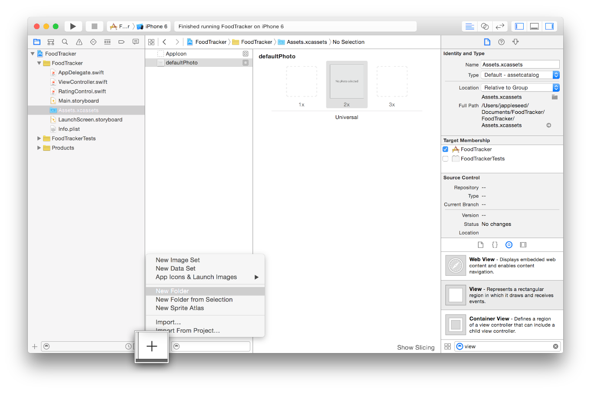
Double-click the folder name and rename it Rating Images.
フォルダ名をダブルクリックして、それの名前をRating Imagesに変えてください。
With the folder selected, in the bottom left corner, click the plus (+) button and choose New Image Set from the pop-up menu.
そのフォルダが選択された状態で、１番下左隅で、プラス（+）ボタンをクリックしてNew Image Set（新規画像セット）をポップアップメニューから選んでください。
An image set represents a single image asset, but can contain different versions of the image to display at different screen resolutions.
画像セットはただ１つだけ画像資産を表示します、しかし異なるバージョンの画像を含むことで異なる画面解像度で表示することができます。
Double-click the image set name and rename it emptyStar.
画像セットの名前をダブルクリックして、その名前をemptyStarに変えてください。
On your computer, select the empty star image you want to add.
あなたのコンピュータ上で、あなたが加えようと思う空の星の画像を選択してください。
Drag and drop the image into the 2x slot in the image set.
その画像を画像セットの2xの挿入位置にドラック＆ドロップしてください。
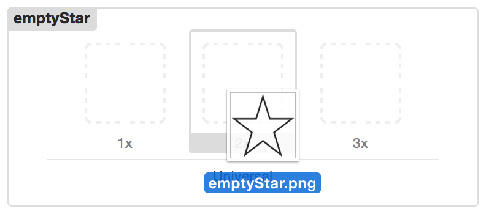
2x is the display resolution for iPhone 6 Simulator that you’re using in these lessons, so the image will look best at this resolution.
2xは、iPhone 6シミュレータ用の画面解像度で、あなたがこのレッスンで使っているものです、それでこの解像度でその画像は最もよく見えるでしょう。
In the bottom left corner, click the plus (+) button and choose New Image Set from the pop-up menu.
１番下左隅で、プラス（+）ボタンをクリックしてNew Image Setをポップアップメニューから選んでください
Double-click the image set name and rename it filledStar.
画像セットの名前をダブルクリックして、その名前をfilledStarに変えてください。
On your computer, select the filled-in star image you want to add.
あなたのコンピュータ上で、あなたが加えようと思う塗りつぶされた星の画像を選択してください。
Drag and drop the image into the 2x slot in the image set.
その画像を画像セットの2xの挿入位置にドラック＆ドロップしてください。
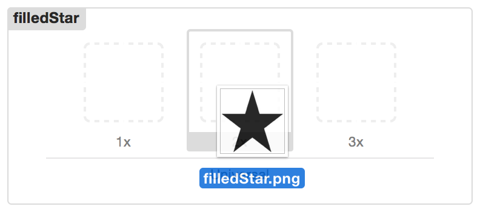
Your asset catalog should look something like this:
あなたのアセットカタログはこのようなものに見えるはずです：
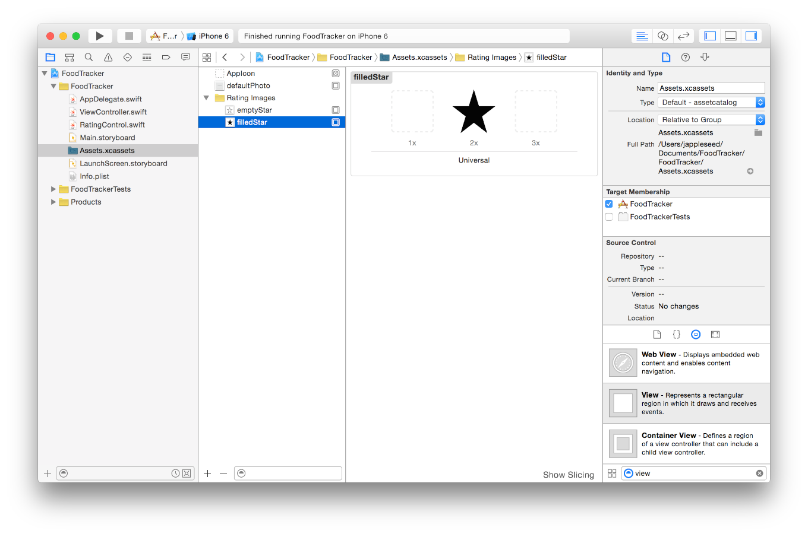
Next, write the code to set the appropriate image for a button at the right time.
次に、コードを書いて適切な画像をボタンに対して正しいときに設定するようにします。
To set star images for the buttons
星画像をボタンに設定するには
Open RatingControl.swift.
RatingControl.swiftを開きます。
In the init?(coder:) initializer, add these two lines of code before the for-in loop:
init?(coder:)イニシャライザにおいて、これら２つのコード行をfor-inループの前に加えてください：
letfilledStarImage = UIImage(named: "filledStar")
letemptyStarImage = UIImage(named: "emptyStar")
In the for-in loop, after the line where the button is initialized, add this code:
for-inループにおいて、ボタンが初期化されるところの行の下に、このコードを加えてください：
You’re setting two different images for different states so you can see when the buttons have been selected. The empty star image appears when a button is unselected (.Normal state). The filled-in star image appears when the button is selected (.Selected state) and when the button is both selected and highlighted (.Selected and .Highlighted states), which occurs when a user is in the process of tapping the button.
あなたは２つの異なる画像を異なる状態に対して設定しています、それであなたはボタンが選択されたのを見ることができます。空の星の画像が現れるのは、ボタンが選択されていないときです（状態.Normal）。塗りつぶされた星の画像が現れるのは、ボタンが選択されたとき（状態.Selected）そしてボタンが選択されるだけでなく強調もされるときです（状態.Selectedと.Highlighted）、それが起こるのはユーザがボタンのタップを進行中のときです。
Delete the line of code that sets the background color to red:
このコード行を削除してください、それは背景色を赤に設定します：
button.backgroundColor = UIColor.redColor()
Because your buttons have images now, it’s time to remove the background color.
あなたのボタンは今では画像を持つので、背景色を取り除くときです。
Add this line of code:
このコード行を加えてください：
button.adjustsImageWhenHighlighted = false
This is to make sure that the image doesn’t show an additional highlight during the state change.
これは画像がその状態変更の間に追加的な強調を見せないことを確実します。
Your init?(coder:) initializer should look like this:
あなたのinit?(coder:)イニシャライザはこのように見えるはずです：
Checkpoint: Run your app. You should see stars instead of red buttons. Clicking any of the buttons at this point should still call ratingButtonTapped(_:) and log the message to the console, but your buttons don’t change images yet. You’ll fix that next.
確認点：あなたのアプリを実行します。あなたは、星を赤いボタンの代わりに見るはずです。ボタンのどれかをクリックすることはこの時点では依然としてratingButtonTapped(_:)を呼び出してメッセージをコンソールに記録します、しかしあなたのボタンは画像をまだ変更しません。あなたはこれを次に修正します。
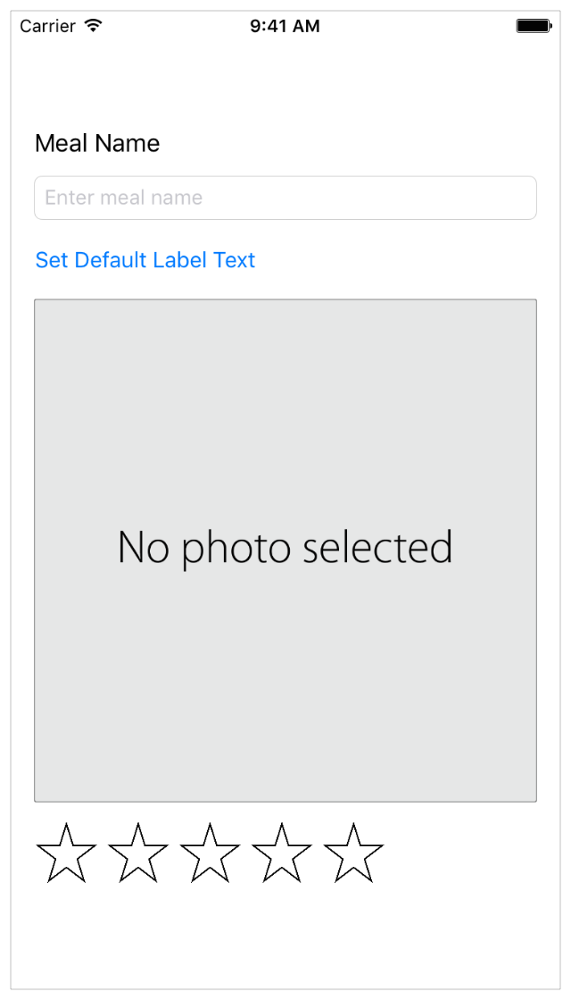
Implement the Button Action
ボタンアクションの実装
The user needs to be able to select a rating by tapping a star, so you’ll replace the debugging implementation with a real implementation of the ratingButtonTapped(_:) method.
ユーザが必要とするのは、格付けの選択がある星のタップによってできることです、それであなたはデバック実装を実際の実装のratingButtonTapped(_:)メソッドで置き換えます。
To implement the rating action
格付けアクションを実装するには
In RatingControl.swift, find the ratingButtonTapped(_:) method:
RatingControl.swiftにおいて、ratingButtonTapped(_:)メソッドを見つけてください：
funcratingButtonTapped(button: UIButton) {
print("Button pressed 👍")
}
Replace the print statement with this code:
print文をこのコードと置き換えてください：
rating = ratingButtons.indexOf(button)! + 1
The indexOf(_:) method attempts to find the selected button in the array of buttons and to return the index at which it was found. This method returns an optional Int because the instance you’re searching for might not exist in the collection you’re searching. However, because the only buttons that trigger this action are the ones you created and added to the array yourself, you can be sure that searching for the button will return a valid index. In this case, you can use the force unwrap operator (!) to access the underlying index value. You add 1 to that index to get the corresponding rating. You need to add 1 because arrays are indexed starting with 0.
indexOf(_:)メソッドが試みるのは、選択されたボタンをボタン配列の中で見つけること、そしてそれが見つかったのはどのインデックスかを返します。このメソッドは、オプショナルのIntを返します、なぜならあなたが探しているインスタンスがあなたがそこで見つけようとしているコレクションの中に存在しないかもしれないからです。しかしながら、このアクションを引き起こすボタンのみが、あなた自身で作成してこの配列に加えたものなので、あなたは探しているボタンが有効なインデックスを返すと確信できます。この場合、あなたは強制アンラップ演算子（!）を使って内在する値にアクセスすることができます。あなたは、1をそのインデックスに加えて、該当する格付けを得ます。あなたが1を加える必要がある理由は、配列は0で開始してインデックスを付けられるからです。
In RatingControl.swift, before the last curly brace (}), add the following:
RatingControl.swiftにおいて、最後の波括弧（}）の前で、以下を加えてください：
funcupdateButtonSelectionStates() {
}
This is a helper method that you’ll use to update the selection state of the buttons.
これはヘルパーメソッド（お手伝いさんメソッド）です、あなたはそれを使ってボタンの選択状態を更新するようにします。
In the updateButtonSelectionStates() method, add this for-in loop:
updateButtonSelectionStates()メソッドにおいて、このfor-inループを加えてください：
for (index, button) inratingButtons.enumerate() {
// If the index of a button is less than the rating, that button should be selected. （あるボタンのインデックスが格付けより少ないならば、そのボタンは選択されるべき。）
button.selected = index < rating
}
This code iterates through the button array to set the state of each button according to whether its index in the array is less than the rating. If it is, index < rating evaluates to true, which sets the button’s state to selected and makes it display the filled-in star image. Otherwise, the button is unselected and shows the empty star image.
このコードは、ボタン配列じゅうを繰り返して、各ボタンの状態をそれの配列中でのインデックスが格付けより少ないかどうかによって設定します。それがそうならば、index < ratingはtrueに評価されます、それはそのボタンの状態を選択されると設定してそれが塗りつぶされた星の画像を表示するようにします。そうでなければ、ボタンは選択されず空の星のイメージを見せます。
In the ratingButtonTapped(_:) method, add a call to updateButtonSelectionStates() as the last line of the implementation:
ratingButtonTapped(_:)メソッドにおいて、updateButtonSelectionStates()への呼び出しをこの実装の最後の行として加えてください。
funcratingButtonTapped(button: UIButton) {
rating = ratingButtons.indexOf(button)! + 1
updateButtonSelectionStates()
}
In the layoutSubviews() method, add a call to updateButtonSelectionStates() as the last line of the implementation:
layoutSubviews()メソッドにおいて、updateButtonSelectionStates()への呼び出しをこの実装の最後の行として加えてください。
overridefunclayoutSubviews() {
// Set the button's width and height to a square the size of the frame's height. （ボタンの幅と高さを配置枠の高さのサイズの正方形に設定する）
It’s important to update the button selection states when the view loads, not just when the rating changes.
これが重要なのは、ボタン選択状態をビューがロードするときに更新するためです、格付けが変化したちょうどその時ではなく。
In the // MARK: Properties section, find the rating property:
// MARK: Properties区域において、ratingプロパティを見つけてください：
varrating = 0
Update the rating property to include this property observer:
ratingプロパティを更新して、このプロパティオブザーバを含めてください。
varrating = 0 {
didSet {
setNeedsLayout()
}
}
A property observer observes and responds to changes in a property’s value. Property observers are called every time a property’s value is set, and can be used to perform work immediately before or after the value changes. Specifically, the didSet property observer is called immediately after the property’s value is set. Here, you include a call to setNeedsLayout(), which will trigger a layout update every time the rating changes. This ensures that the UI is always showing an accurate representation of the rating property value.
プロパティオブザーバ（プロパティ監視者）は、監視と応答をあるプロパティの持つ値における変化に対して行います。プロパティオブザーバは、あるプロパティの値が設定される時すべてに呼ばれます、そしてその値が変化する直前または直後に作業を実行するために使われることができます。具体的には、didSetプロパティオブザーバは、プロパティの値が設定された直後に呼ばれます。ここで、あなたはsetNeedsLayout()への呼び出しを含めます、それは格付けが変わる時すべてにレイアウト更新を引き起こします。これは、UIが常にratingプロパティ値の正確な表現を示していることを保証します。
Your updateButtonSelectionStates() method should look like this:
あなたのupdateButtonSelectionStates()メソッドはこのように見えるはずです：
funcupdateButtonSelectionStates() {
for (index, button) inratingButtons.enumerate() {
// If the index of a button is less than the rating, that button shouldn't be selected. （あるボタンのインデックスが格付けより少ないならば、そのボタンは選択されるべきでない。）
button.selected = index < rating
}
}
Checkpoint: Run your app. You should see five stars and be able to click one to change the rating. Click the third star to change the rating to 3, for example.
確認点：あなたのアプリを実行します。あなたは、５つの星を見るはずです、そして１つクリックすることで格付けを変更できるはずです。例えば、３番目の星をクリックして格付けを３に変えてください。
Connect the Rating Control to the View Controller
格付けコントロールをビューコントローラに接続する
The last thing you need to do to set up the rating control is to give the ViewController class a reference to it.
格付けコントロールの設定としてあなたが最後にしなければならないことは、ViewControllerクラスにそれへの参照を持たせることです。
To connect a rating control outlet to ViewController.swift
格付けコントロールアウトレットをViewController.swiftに接続するには
Open your storyboard.
あなたのストーリーボードを開いてください。
Click the Assistant button in the Xcode toolbar to open the assistant editor.
AssistantボタンをXcodeツールバーにおいてクリックしてアシスタントエディタを開いてください。
If you want more space to work, collapse the project navigator and utility area by clicking the Navigator and Utilities buttons in the Xcode toolbar.
あなたがもっと場所を必要とするならば、プロジェクトナビゲータとユーティリティ区画をNavigatorとUtilitiesボタンをXcodeツールバーにおいてクリックすることで折り畳んでください。
You can also collapse the outline view.
あなたはまたアウトラインビューも折り畳むことができます。
Select the rating control.
格付けコントロールを選択してください。
ViewController.swift displays in the editor on the right. ViewController.swiftは、エディタの右に表示されます。
(If it doesn’t, choose Automatic > ViewController.swift in the editor selector bar)
Control-drag from the rating control on your canvas to the code display in the editor on the right, stopping the drag at the line below the photoImageView property in ViewController.swift.
あなたのキャンバス上の格付けコントロールから右のエディタの中のコード表示へコントロール-ドラッグして、ViewController.swiftの中のphotoImageViewプロパティの下の行でドラッグをやめてください。
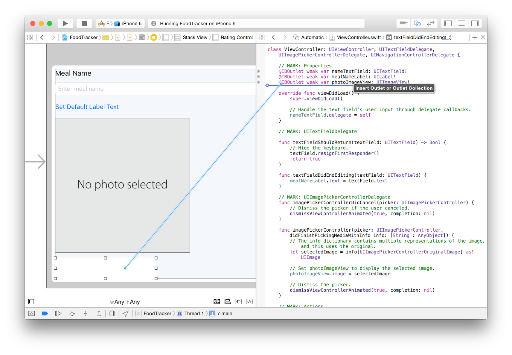
In the dialog that appears, for Name, type ratingControl.
現れたダイアログにおいて、名前に、ratingControlをタイプしてください。
Leave the rest of the options as they are. Your dialog should look like this:
残りのオプションはそれらのままにしておきます。あなたのダイアログはこのように見えるはずです：
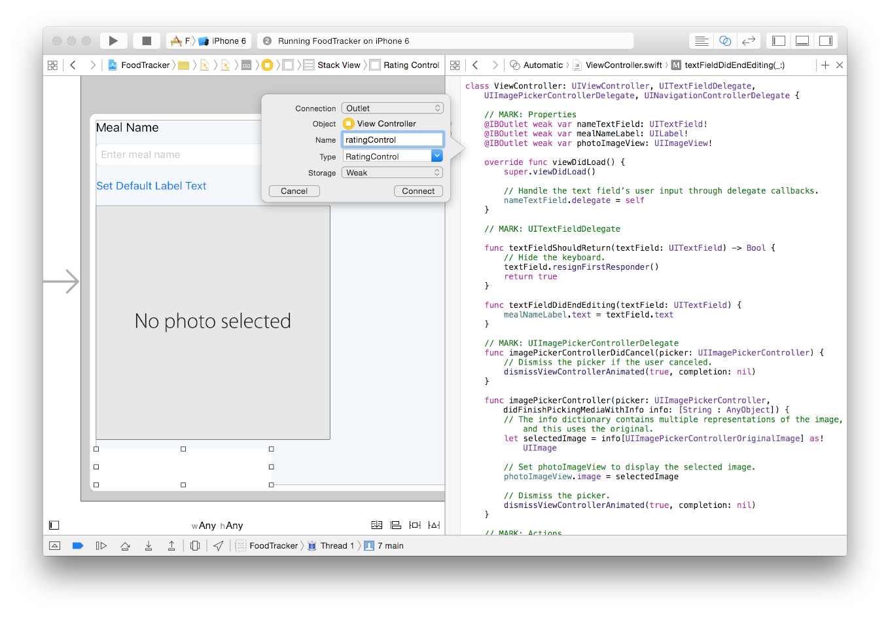
Click Connect.
Connectをクリックしてください。
The ViewController class now has a reference to the rating control in the storyboard.
ViewControllerクラスは今ではストーリーボードの中の格付けコントロールに対する参照を持ちます。
Clean Up the Project
プロジェクトの掃除
You’re close to finalizing the meal scene UI, but first you need to do some cleanup. Now that the FoodTracker app is implementing more advanced behavior and a different UI than in the previous lessons, you’ll want to remove the pieces you don’t need. You’ll also center the elements in your stack view to balance the UI.
あなたは、食事シーンUIの完成段階に近づいています、しかしまずあなたはいくらかの掃除をする必要があります。今ではFoodTrackerアプリは以前のレッスンに比べてより進んだ挙動と異なるUIを実装しています、あなたは必要としない部分を取り除きたいでしょう。あなたはまた、あなたのスタックビューの要素の中心をとってUIのつり合いをとりたいでしょう。
To clean up the UI
UIを掃除するには
Return to the standard editor by clicking the Standard button.
標準エディタにStandardボタンをクリックすることで戻ってください。
Expand the project navigator and utility area by clicking the Navigator and Utilities buttons in the Xcode toolbar.
プロジェクトナビゲータとユーティリティ区画をNavigatorとUtilitiesボタンをXcodeツールバーでクリックすることで広げてください。
Open your storyboard.
あなたのストーリーボードを開いてください。
Select the Set Default Label Text button, and press the Delete key to delete it.
Set Default Label Textボタンを選択します、そしてデリートキーを押してそれを消去してください。
The stack view rearranges your UI elements to fill the gap that the button left.
スタックビューは、あなたのUI要素を配列し直して下と左の隙間を埋めます。
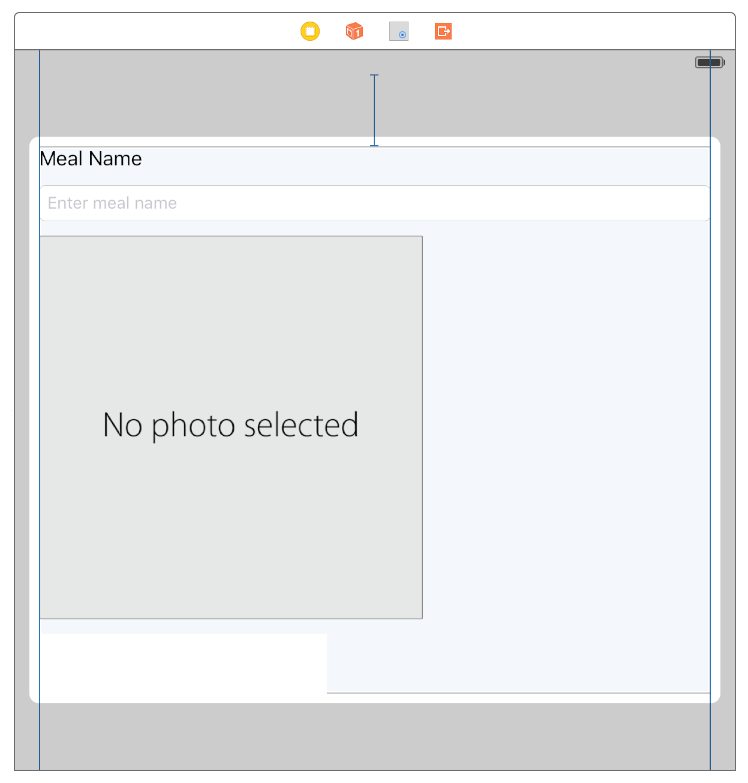
If necessary, open the outline view. Select the Stack View object.
必要なら、アウトラインビューを開いてください。Stack Viewオブジェクトを選択してください。
That’s all you need to delete for now. You’ll make a change to the label outlet (mealNameLabel) in a later lesson.
これが今のところあなたが削除に必要なすべてです。あなたは、あとのレッスンでラベルアウトレット（mealNameLabel）に変更を行います。
Checkpoint: Run your app. Everything should work exactly as before, but the Set Default Label Text button is gone, and the elements are centered horizontally. The buttons should be side-by-side. Clicking any of the buttons at this point should still call ratingButtonTapped(_:) and change the button images appropriately.
確認点：あなたのアプリを実行します。すべてのものが正確に以前と同じように働きます、しかしSet Default Label Textボタンはなくなりました、そして要素は水平方向の中心に置かれます。ボタンは横に並んでいるはずです。ボタンのどれかをクリックするとこの時点では依然としてratingButtonTapped(_:)が呼び出されます、そしてボタン画像は適切に変化します。


 .
.